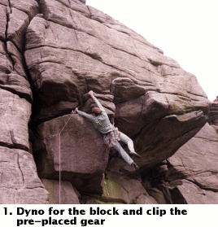

| Jim's Site | |

Last Updated: Wed Jun 09 14:19:48 BST 2004
 |
| Photos: Jim Randell |
Mathias Willerup attempting Kelly's Overhang,
(HVS 5b,15m), Stanage Edge, Peak District
29th August 1999
Sadly he didn't complete the route. This series of photos is composed of his various attempts at the crux combined with his retreat removing gear. Amazingly the first ascent of this route was in 1926.
All information on this site is copyright © 1994-2026 Jim Randell